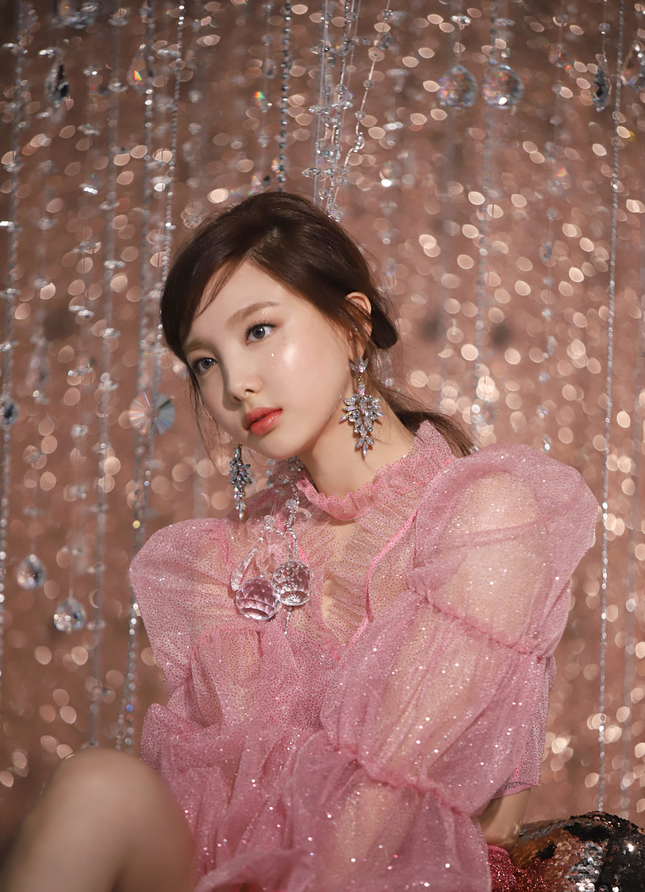
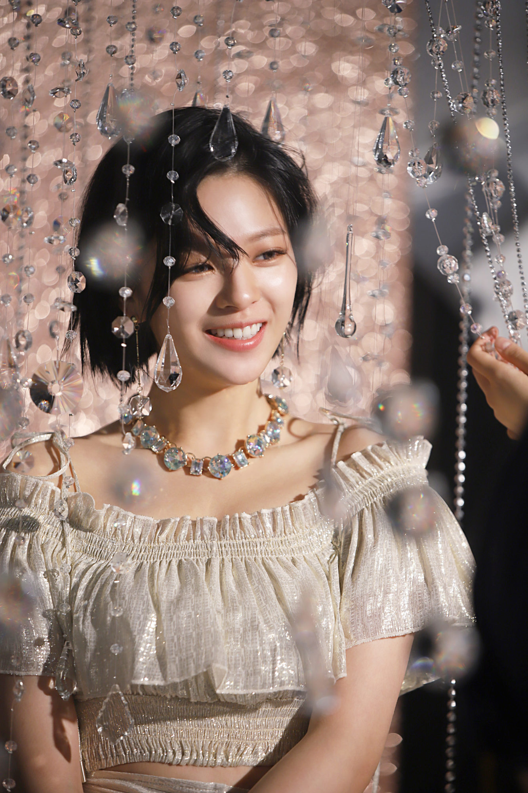
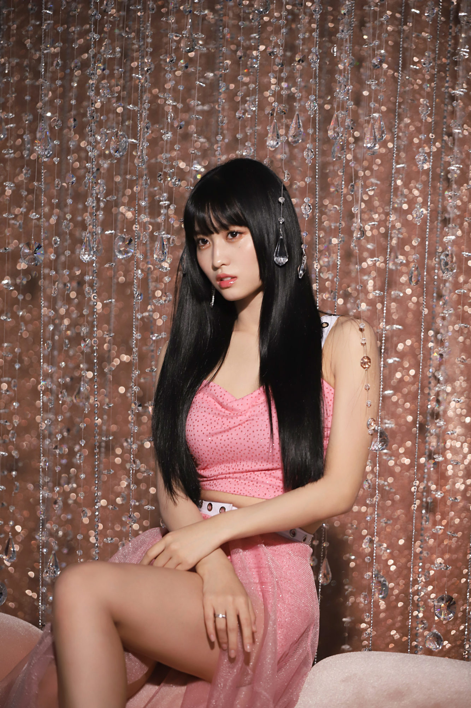
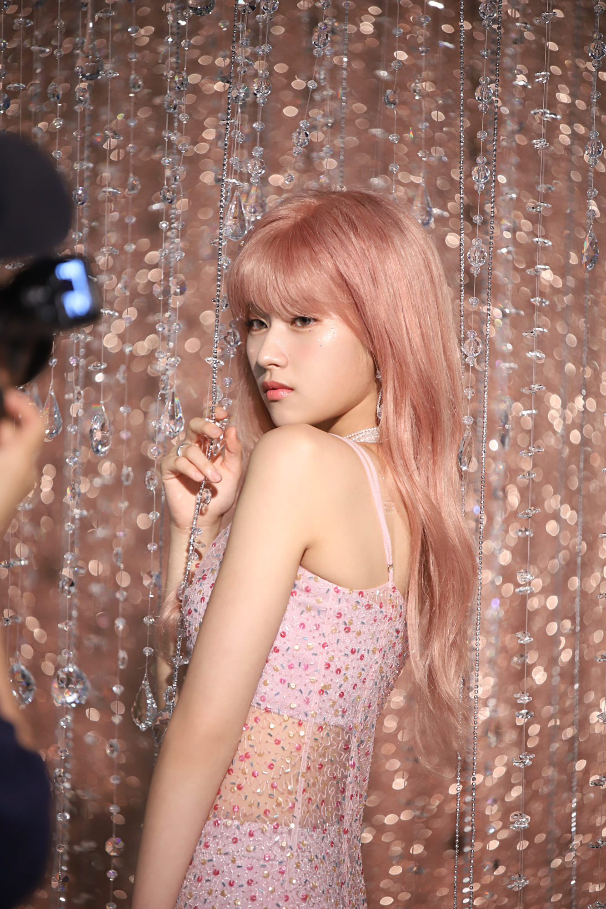
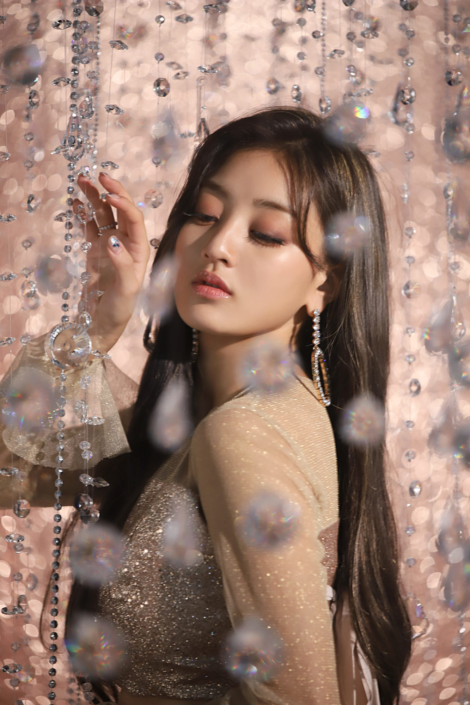
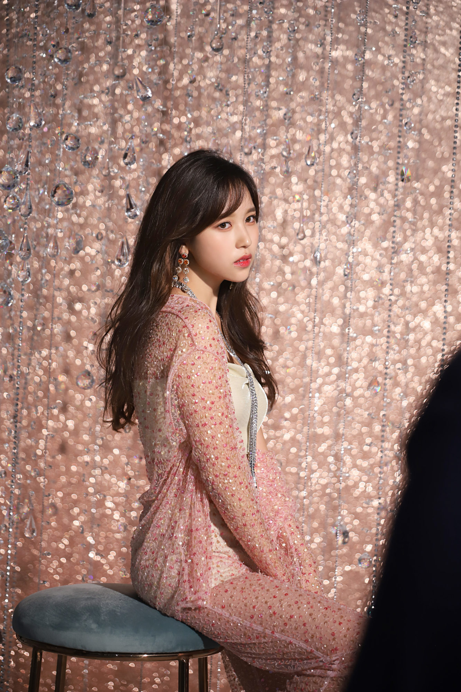
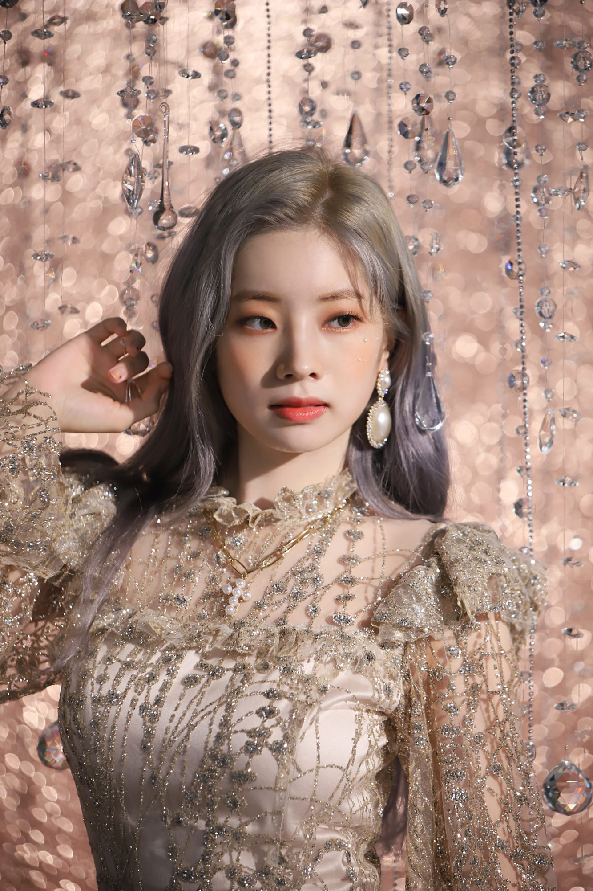
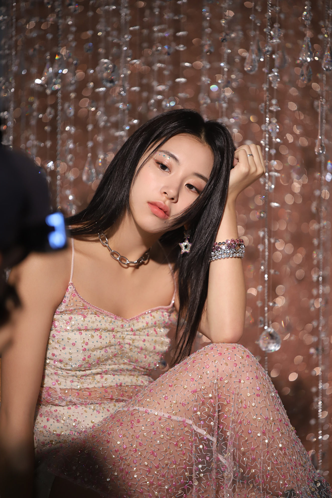
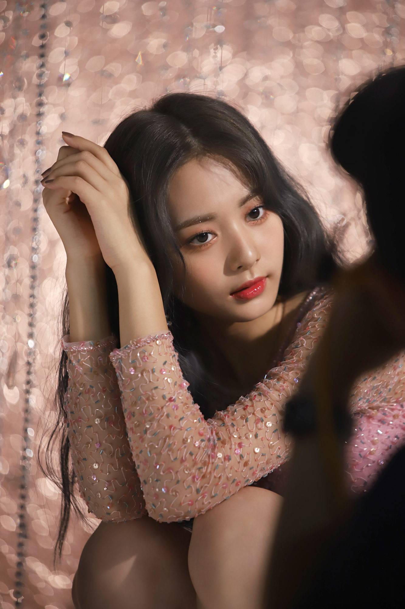

1. NAYEON

- Oldest member
- Center
- Lead vocalist
- Lead dancer
- Born September 22, 1995
- MBTI: ISTP-A*
- Korean
2. JEONGYEON

- Lead vocalist
- Born November 1, 1996
- MBTI: ISFJ-T
- Korean
3. MOMO

- Main dancer
- Sub vocalist
- Sub rapper
- Born November 9, 1996
- MBTI: INFP-T
- Japanese
4. SANA

- Sub vocalist
- Born December 29, 1996
- MBTI: ENFP-T
- Japanese
5. JIHYO

- Leader
- Main vocalist
- Born February 1, 1997
- MBTI: ISFP-T
- Korean
6. MINA

- Main dancer
- Sub vocalist
- Born March 24, 1997
- MBTI: ISFP-T
- Japanese-American
7. DAHYUN

- Lead rapper
- Sub vocalist
- Born May 28, 1998
- MBTI: ISFJ-T
- Korean
8. CHAEYOUNG

- Main rapper
- Sub vocalist
- Born April 23, 1999
- MBTI: INFP-T
- Korean
9. TZUYU

- Youngest member
- Lead dancer
- Sub vocalist
- Visual
- Born June 14, 1999
- MBTI: ISFP-A
- Taiwanese
For more information on the members, visit KProfiles.
*Want to know your MBTI type? Take the same quiz as TWICE here!